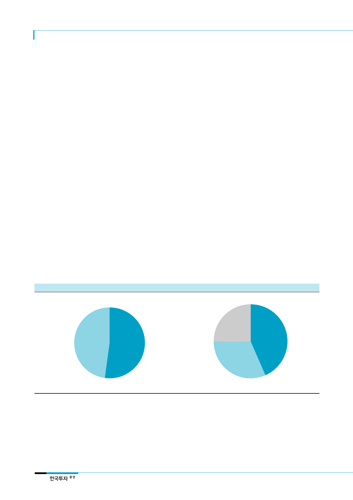

삼성바이오로직스(207940)
II. 기업개요
최대주주는
삼성물산과 삼성전자
1. 삼성그룹의 미래성장동력으로 출범한 삼성바이오로직스
1) 글로벌 대형 제약사들을 대상으로 CMO(의약품 위탁생산) 사업을 영위
동사는 2011년 4월 설립되어 2016년 11월 코스피에 상장한 삼성그룹의 동물세포배양타
입의 바이오의약품 CMO(Contract Manufacturing Organization, 의약품 위탁생산 사업)
업체이다. 2016년 매출의 100%가 CMO사업에서 발생했다. 주요주주는 삼성물산(43.4%),
삼성전자(31.5%) 등이다. 주요 고객사는 글로벌 제약업체들인 Bristol-Myers
Squibb(BMS), Roche 등이며 협력 파트너는 Merck와 Biogen 등이다.
삼성이 바이오 서업을 그룹의 신수종 사업으로 선정하면서 삼성전자는 2009년 혈액암 및
자가면역질환 치료제 Rituxan의 바이오시밀러 개발에 착수했다. 그러나 기술과 경험부족
등의 이유로 바이오시밀러 개발을 중단하게 된다. 그 후 삼성그룹은 건설, 디스플레이, 반
도체 등에서 보여준 그룹의 역량(공장설립, 제품양산, 수율관리 등)을 십분 발휘할 수 있
는 CMO사업에 눈돌리게 된다. 이에 따라 삼성그룹의 미래성장동력으로 2011년 4월 삼성
에버랜드(현 제일모직), 삼성전자, 삼성중공업, 미국 Quintiles사의 합작법인(지분율 각각
40%, 40%, 10%, 10%)인 삼성바이오로직스가 출범했다.
CMO란 제약사들에게 의약품 위탁생산 서비스를 제공하는 회사를 말한다. 제약사들은
CMO업체들에 제조를 위탁함에 따라 비용을 절감함과 동시에 신약개발과 마케팅에 집중
할 수 있다. 동사는 화학의약품보다 생산 난이도가 높은 바이오의약품만을 위탁생산하고
있다. 동사는 3공장 증설 및 기존 1, 2공장의 유지보수(7,800억원)와 자회사 바이오에피
스의 유상증자(4천억원), 부채상환(1,800억원) 등의 목적으로 2016년 11월 거래소에 상장
했으며 이를 통해 1조 4천억원을 조달했다.
[그림 10] 삼성바이오로직스 상장 전 주주구성
[그림 11] 삼성바이오로직스 상장 후 주주구성
삼성전자
47.8%
삼성물산
52.2%
기타
25.1%
삼성물산
43.4%
자료: 전자공시시스템, 한국투자증권
삼성전자
31.5%
자료: 전자공시시스템, 한국투자증권
10